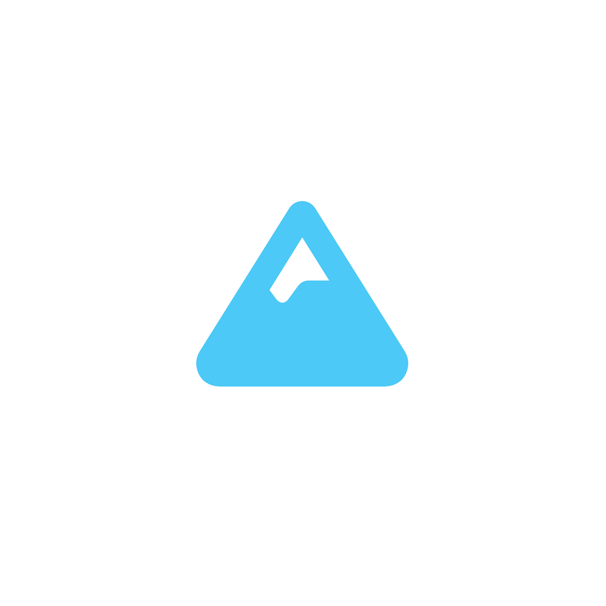

C# .NET Bootstrap and SQL
The task: Build a ski resort data accounting system, with CRUD functionality.
As my qualification project I decided to build a website where ski resorts can track their reservations and Create Read Update and Delete them.
The system is built using C#. The website uses HTML, CSS and JavaScript. MySQL is used for the database. The project was created in Visual Studio Community 2022.
I had a lot of fun with this project because I faced lots of new challenges and experiences I hadn't had to deal with. It was a refreshing departure from my usual routine, and I relished the opportunity to step out of my comfort zone and explore uncharted territories.
The project introduced me to a host of unfamiliar obstacles that demanded creative problem-solving and adaptability. Each day brought a unique set of challenges, pushing me to think on my feet and come up with innovative solutions. From technical hurdles that required me to learn new skills to interpersonal dynamics that tested my ability to collaborate effectively, every moment was a chance for growth and learning.
It was the first time I had to use SQL databases and I approached them with a mix of curiosity and apprehension. The syntax and structure seemed intimidating at first, but I was determined to overcome any obstacles. I embarked on a journey of learning, immersing myself in tutorials, online resources, and practical exercises to grasp the fundamentals.